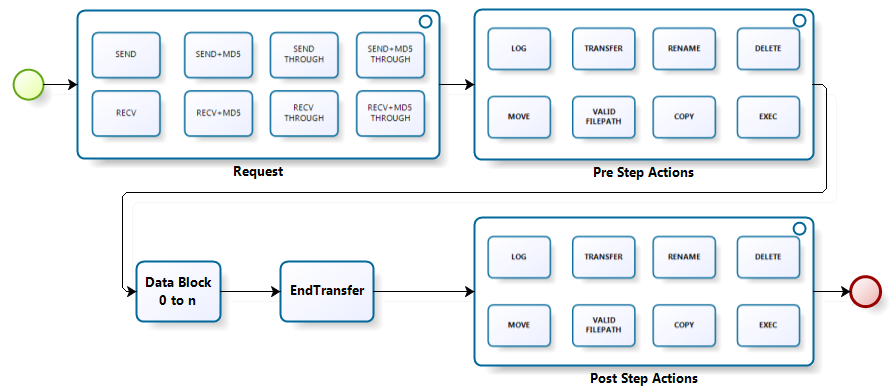
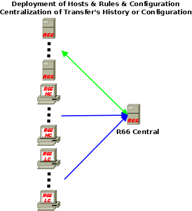
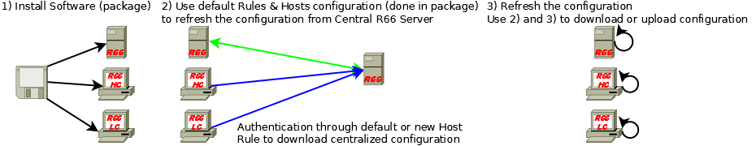
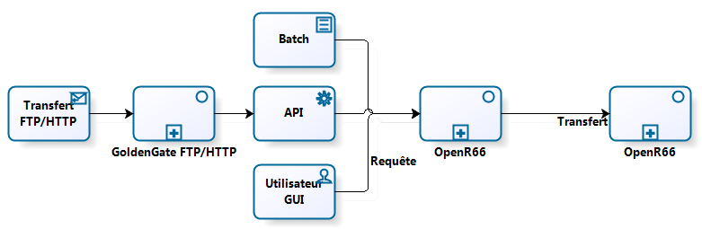
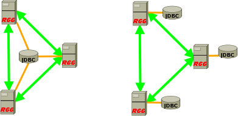

Presentation of Waarp R66: Massive File Transfer Monitor
-
Efficient and secured
Unlimited concurrent number of transfer
Possibility to limit the bandwidth (in point 2 point or globally)
Possibility to limit the CPU usage and the simultaneous number of transfers
Guaranty of delivery (persistence through database and retry)
Virtualization of access paths
Track of meta-data associated with transfers
Encrypted connection support (SSL) with optional strong authentication and Packet Integrity support
Easy integration in security rules (low number of chosen ports, flow multiplexing)
Partner authentication (through encrypted password and optionally through strong SSL Client Authentication)
Rules validation of usage by partner
Possibility to have multiple OpenR66 File Transfer Monitors acting as a single one behind a Load Balancer to enable more reliability and scalability
Possibility to setup a Proxy/Reverse Proxy for DMZ implantation
-
Possibility to create specific users with limited access to the HTTPS Web administration
Adaptation to functional needs
Support of internationalization (i18n, currently  and
and  )
) Log level could be changed dynamically from the Administration interface
One partner could be blocked, such that no transfer or request will be allowed from this partner.
One partner could be defined as proxified, such that IP is not checked for this partner.
Initiator of transfer in different modes SEND or RECV through Rules
Pre and Post Actions according to transfer Rules associated with each transfer
Integration through script
Integration through submission client in Java
Integration through interaction with the database of Waarp R66
Integration through a Graphical User Interface (Light Client only)
Integration through native Java code (business code) either through BusinessFactory or through R66Runnable
Spooling directory capability (automatic sending files when placing them in specific directories)
-
Transmit in synchronous or asynchronous mode

Pre and Post transfer procedures
Native operations
LOG: Write in the log file the given information
RENAME: Rename the file
MOVE: Move the file
VALID FILEPATH: Valid the constructed file path
DELETE: Delete the file
COPY: Copy the file
TRANSFER: Transfer again the file to another OpenR66 server
RESCHEDULE: Reschedule Transfer task if the error code is one of the specified codes and if the new schedule is valid
TAR/ZIP: To tar or zip according to arguments
TRANSCODE: ability to transcode from one Charset to another one (as ISO-8859-15 to IBM01147)
SNMP: ability to send a trap/info from task execution
FTP: ability to use synchronous transfer in tasks
-
UNZEROED : allow to transfer original 0-length file by adding 1 byte
-
External operations
EXEC (or EXEC RENAME): Execute an external procedure (system call) on the basis of args given or constructed (and rename the file according to the result of the command)
EXECOUTPUT: Execute an external procedure (system call) on the basis of args given or constructed but in case of error, it uses the output to setup information status using <STATUS>status</STATUS><ERROR>error message</ERROR>
-
EXECJAVA: Execute an external procedure (Java Class implementing R66Runnable) on the basis of args given or constructed
Integration, Administration and Production
Easily integrated into Security rules
Easily integrated into a production plan
Easily integrated into a supervision tool (HTTP/SNMP)
Allow to block any new request, such that shutdown could be started once all active requests are over.
Allow to handle the configuration in a central point
-
Allow to handler the history of the transfers in a central point
In push or pull mode to or from the central server point
Updated at the desired rhythm
-
No lock of the OpenR66 monitors in case the central server is unavailable


HTTPS native interface for the administration with access control
Allow the administration through script
SNMP support as Agent (MIB included) in SNMP V2 or SNMP V3
-
HTTP native interface for the supervision

History of transfers
Independence with server platforms
Full Java (minimum JDE 6)
Tested on Windows, Linux, AIX
-
Solution totally Open Source
Usage mode

Partners: who are they?
In R66, there are 2 kinds of partners: client and server.
A client can request a transfer (in send or recv), but it cannot be the target of a request since it is supposed to be inactive while not requesting a transfer.
A Light Client is a real client with no database at all. It can however manage to store the "past" in XML log files for each transfer.
-
A Heavy Client is a client with a database support. It can be used as a server if wanted, or only as a Client, meaning inactive while no request is initiated by itself.
-
A server can request a transfer and can be the target of a request.
In R66, once the request is started, there are 2 roles: requester and requested.
The requester is responsible for the request, since it initiates it. It means that it is the only one that could initiate a restart of this request in case of failure. The main reason is that the request of transfer is generally related to a condition on the requester side. However a requested host could try to request the requester to resend its request. At the time being, it can only be done through the web admin interface.
In R66, once the request is running, there are 2 actors: sender and receiver.
Considering a rule, sender and receiver will match accordingly the requester and requested:
This has to be understood correctly when creating the rule, and in particular to understand which part of the “send” or “recv” tasks will be executed by one or the other of the 2 partners involved in the transfer.
Below is presented the different way to operate R66 transfers.

Usable with many kind of Databases(centralized or distributed)

Tested with several databases through JDBC : Oracle, PostGreSQL, MySQL, MariaDB, H2 (for a low footprint on a PC) (recommended is PostGreSQL or H2)
Database schema is sharable between several OpenR66 servers within one Data Center
In case of a set of Servers acting as a Single One, they do share the same ID and Database and Storage
-
Possibility to not rely on any database, but then some functionality will be off (like extended monitoring or the ability to restart transfer in error, except through XML file analysis - if active -)